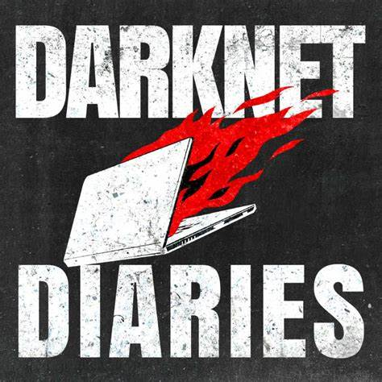

Otros
Inglés
Noten que la mayoría del contenido de Tecnología es en inglés. Saber inglés es la herramienta más importante para trabajar en la industria. La pronunciación no hace falta que sea perfecta, lo importante es comunicarse.
Aprender a Aprender
Ser auto-didacta es muy valioso. Especialmente en una industria que cambia costantemente. Mantenerse actualizado a diario genera un profesional que sobresale.
No se olviden de vivir
Prueben cosas, vayan a hackathones, participen en proyectos interesantes. Hagan deporte, salgan con sus amigos y disfruten. No se les olvide que deben vivir.

Darknet Diaries
Último pero no menos importante, uno de mis podcasts Favoritos. Darknet Diaries (Click acá)